DATA ART: SIGNALS
Welcome to the Data Art 2026 Exhibition. A celebration of creative visualisation and data-driven artistry.
The exhibition will officially open on Tuesday 12th May 2026, with arrivals from 9:30am for a 10:00am start.
The Data Art: Signals exhibition focuses on the rhythms, patterns, and meanings embedded within the data that surrounds us. Showcasing work by third-year students from the Creative Visualisation module ICE-3121, in the School of Computer Science and Engineering at Bangor University, this exhibition highlights how emerging practitioners are pushing the boundaries of how data is seen, felt, and understood.
This year's exhibition explores the signals that emerge from data, celebrating how numbers can be transformed into artistic expression. It highlights that data is not something distant or abstract, but something that shapes our everyday lives. At times, the real world evokes emotions—anger, sadness, joy, and the data behind it carries that same emotional weight. In this exhibition, data is brought to life, making its impact tangible and real.
Building on last year's exploration of data as narrative, Signals shifts attention to data as movement and connection. Streams of information that pulse through environmental systems, digital networks, and human experiences. Students have engaged with diverse datasets, from climate fluctuations and urban activity to personal histories and speculative futures, transforming them into immersive visual and interactive artworks.
Blending technical skill with creative inquiry, these works demonstrate how data science and artistic practice can intersect to produce pieces that are not only informative but evocative. Here, data becomes dynamic: it flickers, flows, resonates. It signals change, tells stories, and invites reflection and an emotional response.
2026 Exhibition Curation
Curated by Professor Jonathan C. Roberts from Bangor University.
As part of the Creative Visualisation module at Bangor University, students studying Computer Science, Data Science, Creative Technology or Computer Science with Games create original data art pieces. Staff have also contributed to some of the art pieces.
Each student selects a dataset of personal or topical interest, explores artistic inspiration from established art styles and data artists, and experiments with alternative visual concepts. After sketching out their ideas, they bring their final work to life using Processing.org – transforming data into engaging and expressive visual art.
Rooted in authentic learning, the module continues to challenge students to develop projects with real-world relevance and public engagement. This exhibition is the culmination of that process. It is a space where analysis meets imagination, and where audiences are encouraged to see data not just as information, but as experience.
In addition, staff and PhD students from the Human Centred Computing research group have contributed visual works drawn from their own research, exploring ways to make data more accessible while reflecting their experiences and the issues that matter to them.
Exhibits
Including
-
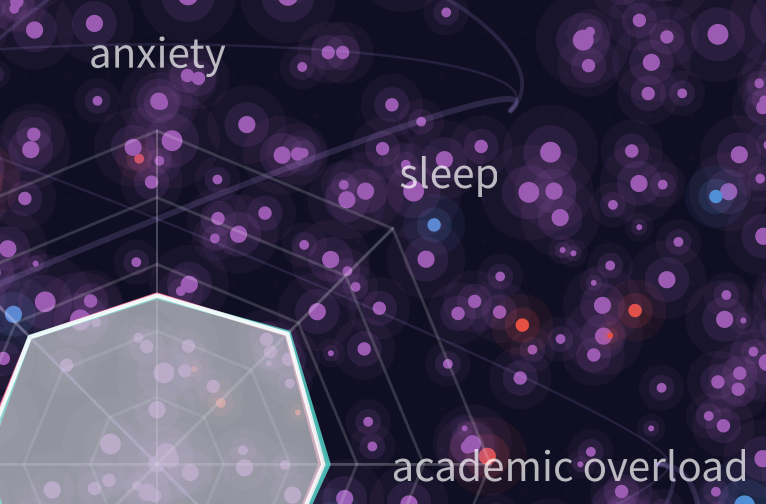
The Weight We CarryThe artwork visualises 2000 students as glowing particles, using colour and size to represent stress levels and intensity, forming an immersive constellation of individual experiences. It combines multiple stress indicators into radial and flowing visual elements, blending data correlations with emotional expression. -
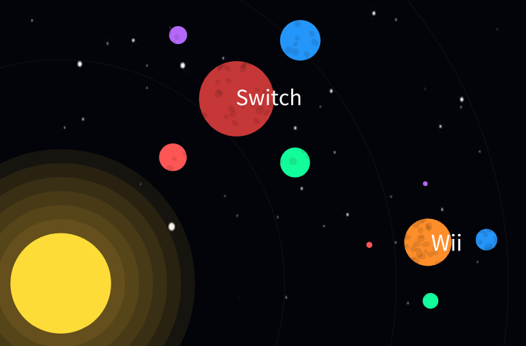
Galactic Console SalesA solar system-inspired visualisation where each console appears as a planet, with size representing total sales and distance from the sun indicating release year. Regional sales are shown as orbiting moons, highlighting global performance. -
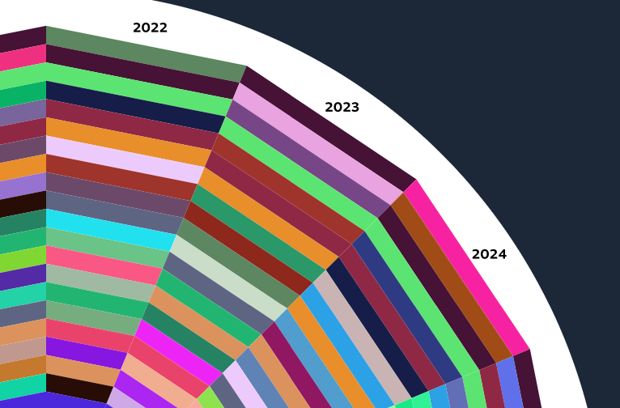
Steam Games Popularity ChartA radial chart mapping the top 25 Steam games over time, with position indicating rank and each game assigned a unique colour. The layout reveals shifting popularity trends across years in a structured, visual form. -
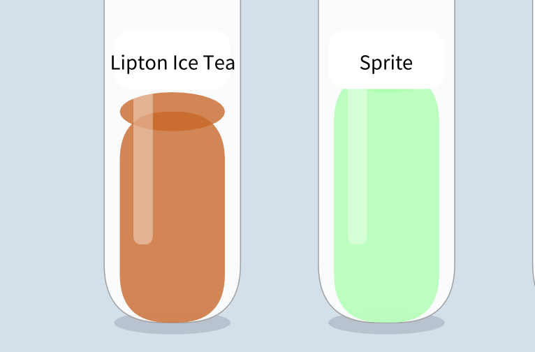
Sugar and Calories in Fizzy DrinksA bottle-based visualisation where liquid height represents sugar content, making comparisons between drinks clear and intuitive. Colour and form reflect real beverages, highlighting contrasts between high- and low-sugar options. -
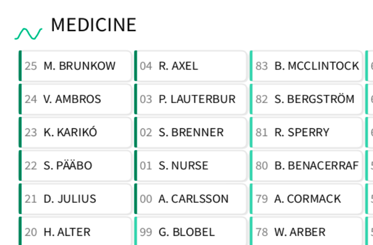
Nobel Prize Winners, 1901 to 2025A categorical display of Nobel Prize winners across six fields, spanning over a century of achievement. It highlights the breadth and evolution of contributions in science, literature, peace, and economics. -
Our Solar System in its Smaller BodiesA visualisation of small Solar System objects where orbit length and brightness reflect visibility and magnitude. Orbital colour and density reveal structures like the asteroid belt, Trojan swarms, and Kuiper belt.
-
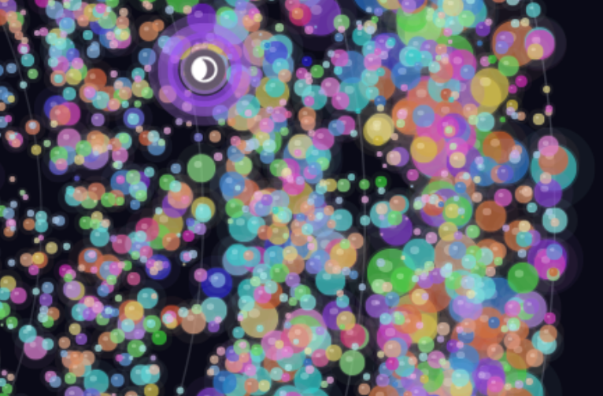
Evolution of Power: A 25-Year Journey Through the Pokémon Trading Card GameA radial visualisation of 18,210 Pokémon cards across 25 years, with time encoded from centre to edge and circle size reflecting HP. Colour represents card type and saturation indicates rarity, revealing long-term power creep trends. -
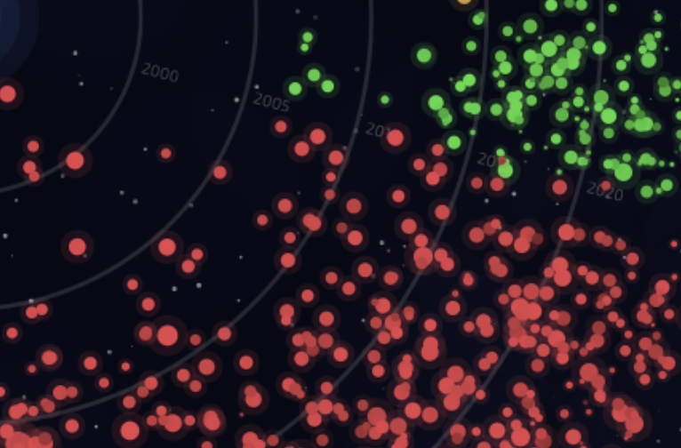
Steam GalaxyA radial galaxy visualisation of nearly 4,000 Steam games, where each star encodes genre, popularity, rating, and release year. The composition reveals platform trends, including the strong dominance of Action games. -
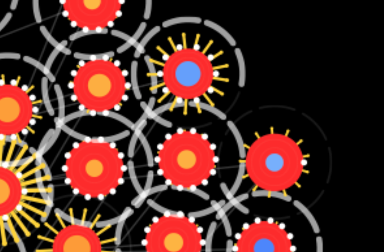
A Year in WeatherA radial spiral visualisation of daily weather data from Valley, Holyhead, where each glyph represents one day of the year. Temperature, humidity, wind, sunshine, and cloud cover are encoded into colour, shape, and motion to reveal seasonal patterns. -
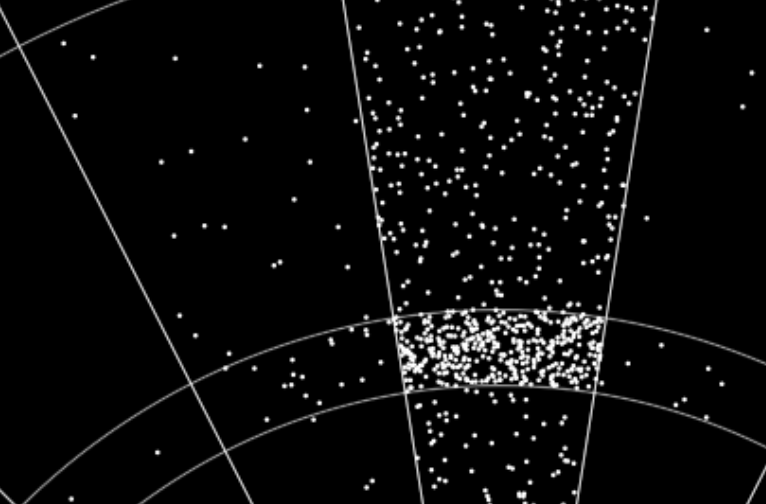
Where darts go?A dartboard visualisation mapping recorded PDC World Darts Championship throws to scoring segments. Points are randomly distributed within each region, illustrating overall patterns rather than exact hit locations. -
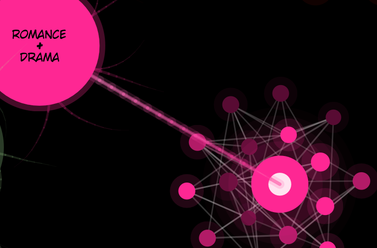
Mapping My Reading History: A Genre-Based Network VisualisationA network visualisation of personal reading data, where works cluster by genre to form a brain-like structure. Node size, colour, and connections encode score, genre similarity, and reading status. -
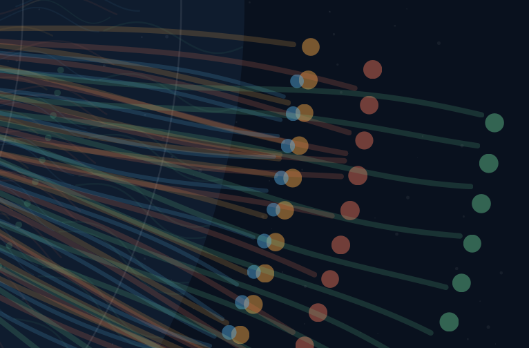
Bangor Energy PulseA radial visualisation of campus energy data, where building sectors and branching strands reflect annual usage and monthly variation. Colour encodes electricity, gas, water, and carbon, revealing patterns of sustainability across campus. -
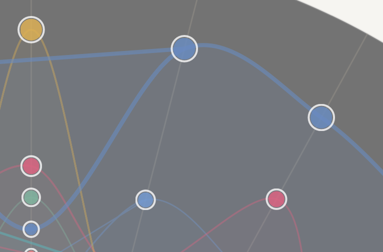
Olympic Swimming Dominance Over TimeA radial timeline of Olympic swimming dominance, mapping countries’ presence across decades around the Olympic rings. Colour, scale, and transparency reveal shifting national influence and overlapping competition over time. -
Premier League Matrix PatternA matrix visualisation of all 380 Premier League 2024–2025 fixtures, revealing patterns in team performance. Colour-coded results highlight wins, losses, and draws across home and away games.
-
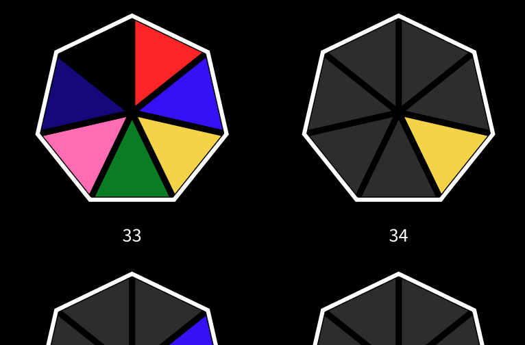
Power Rangers Episodes by ColourA colourful timeline of Power Rangers episodes, highlighting which character leads each storyline. Chronological layouts and colour emphasis reveal team growth and shifting narrative focus across series.
Staff and PhD students:
-
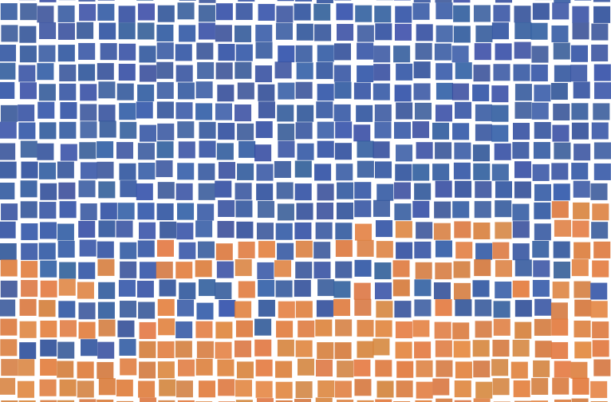
Bangor: Many lives in one placeA population portrait of Bangor built from coloured squares, where each square represents a person drawn from census and university data. Colour bands distinguish residents, students, and visitors, revealing a living, shifting map of the town. -
Communities and Connections in Social Welfare Legal AdviceA network visualisation of 185 social support systems, where individuals and their connections form mapped community structures from interview data. Relationship strength and connectivity are revealed through spatial clustering and linking patterns across different social contexts.
-
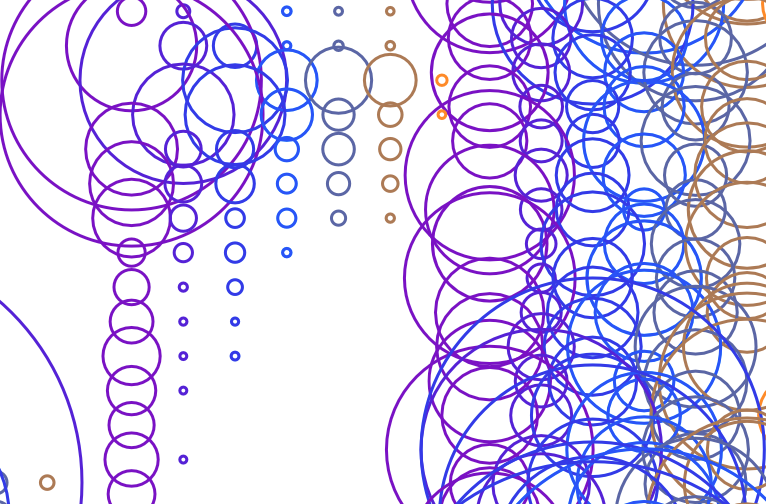
Day startA five-second soundscape of a morning routine, moving from mechanical rhythms to domestic and outdoor moments. Frequencies are visualised through colour and form, revealing the layered transition into the day. -
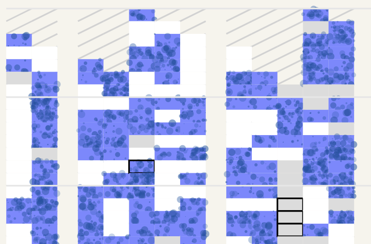
Did it rain?A long-term visual record of daily weather in Anglesey, revealing seasonal and weekly rainfall patterns over decades. Colour and texture encode rainfall intensity, snowfall, and missing data across a continuous yearly timeline. -
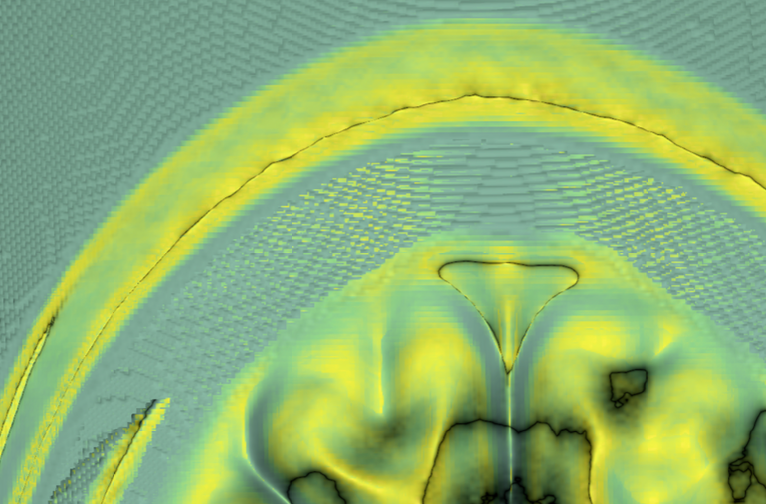
HeadscapesEnlarged views from a 3D MRI visualisation transform brain scan data into immersive volumetric forms. Advanced rendering techniques reveal internal structures through light, colour, and spatial depth. -
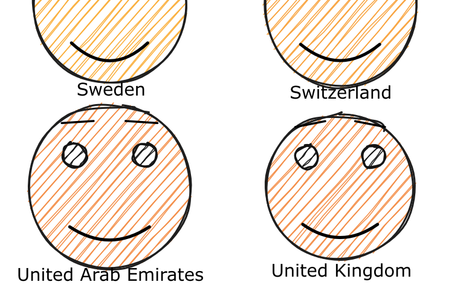
Faces of HappinessA global portrait of wellbeing using faces to encode happiness, wealth, freedom, and generosity. Visual features translate data into expressions, revealing how life satisfaction varies across nations. -
 Brent Crude Oil — Pump Prices by CountryA radial comparison of global fuel prices, showing 167 countries relative to the world average. Curved arms and event rings reveal regional differences and key geopolitical impacts on oil prices.
Brent Crude Oil — Pump Prices by CountryA radial comparison of global fuel prices, showing 167 countries relative to the world average. Curved arms and event rings reveal regional differences and key geopolitical impacts on oil prices.